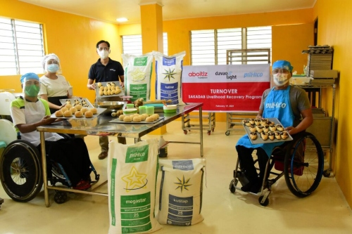
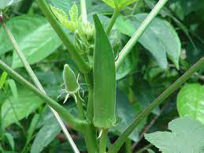

Scientific Investigatory Project

ㅤㅤOur SIP aims to find out the most efficient amount of compost to be used in growing Okra (Abelmoschus esculentus). We plan to find this out by setting up a
ㅤㅤexperiment that will sufficiently and accurately cover the situation. The Set-ups will be observed and watered every week,the experiment will end after a month.
ㅤㅤProblem -
ㅤㅤWhat is the optimal amount of compost to be used in the growth of Okra (Abelmoschus esculentus)?
ㅤㅤHypothesis -
ㅤㅤIf more compost would be used for growing Okra (Abelmoschus esculentus), then the amount of leaves and the size would be bigger compared
ㅤㅤto the plants grown with less compost.

ㅤㅤDependent Variables -
ㅤㅤAmount of leaves, growth rate, and vertical length
ㅤㅤIndependent Variables -
ㅤㅤAmount of Fertilizer
ㅤㅤControl Variables -
ㅤㅤSoil used, Environment, Watering Cycle, and Pots used

ㅤㅤControl Set-up
ㅤㅤOkra seedling given no fertilizer, watered 24ml (1.5 inches) every week
ㅤㅤExperimental Set-up 1 -
ㅤㅤOkra seedling given 0.5 inches of fertilizer (1.25 cm), watered 24ml (1.5 inches) every week
ㅤㅤExperimental Set-up 2 -
ㅤㅤOkra seedling given 1 inches of fertilizer (2.50cm), watered 24ml (1.5inch) every week
ㅤㅤExperimental Set-up 3 -
ㅤㅤOkra seedling given 1.5 inches fertilizer (3.75cm), watered 24ml (1.5inch) every week
ㅤㅤExperimental Set-up 4 -
ㅤㅤOkra seedling given 3 inches fertilizer (5cm), watered 24ml (1.5inch) every week